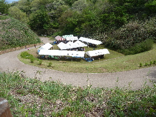
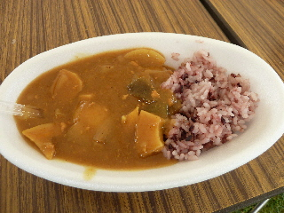
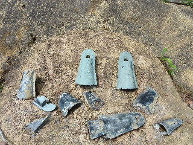

加茂岩倉遺跡の春まつり
2014/04/29
ゴールデンウィークです。
今日はお休みですけど予定はありません。
お昼ご飯の時間ですが、なんか作る気がしません。
よし、イベントに行ってそこで食べよう！って加茂岩倉遺跡に行きました。
「古代出雲王国加茂岩倉春まつり」ってイベントがやっていました。
国宝となった加茂岩倉遺跡銅鐸が出た場所で、よく耳にするんですが、実際に行ったのは初めてです。

会場はこんな感じです。
山に囲まれてて、自然がいっぱいです。
お出かけしました！って気分になれました。
テントの中では、まがたまづくり、古代村模型づくり、火起こし体験、ハンカチの草木染め、山野草の天ぷら、ヤマメの塩焼き、古代米カレーの販売がありました。

古代米カレーを食べました。
ちょっと変わってて、タケノコやレンコンが入っていました。
食感も味もよく、美味しかったです。
来年もこのイベントで食べたいかもって思いました。
他にも山野草の天ぷらを食べたんですが、藤の花とか、普段食べれないものが食べれて良かったです。

帰りに遺跡の発掘場所を見ました。
整備された山の散策コースがあったので、今度時間があれば歩きたいなって思いました。